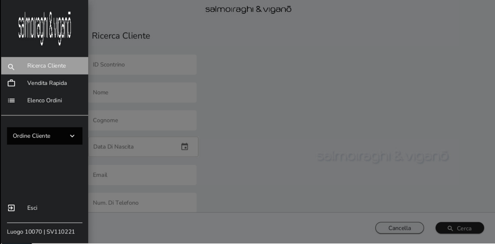
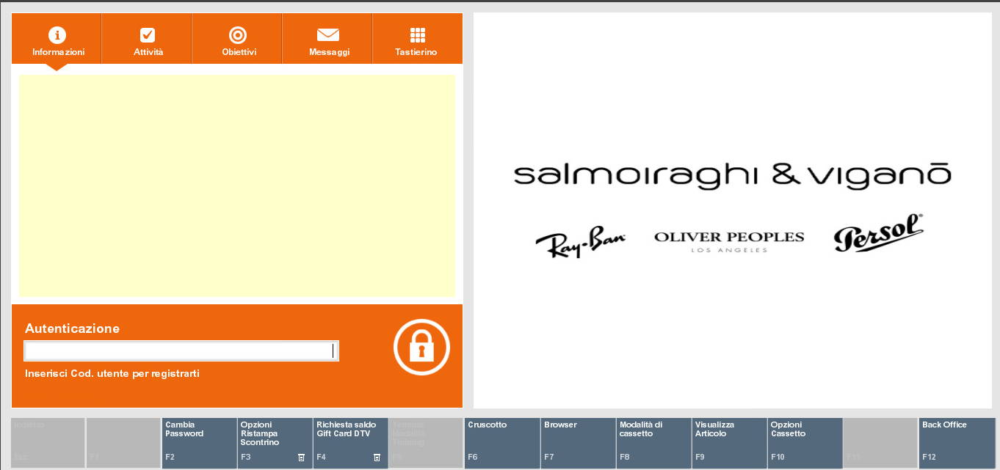
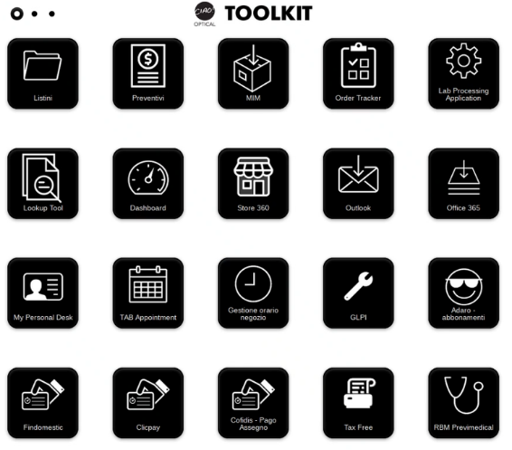
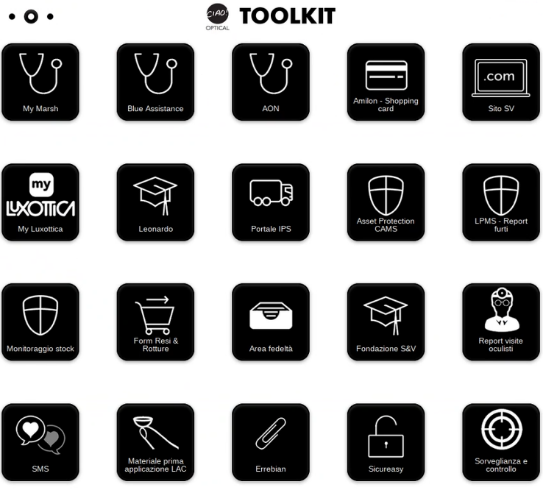
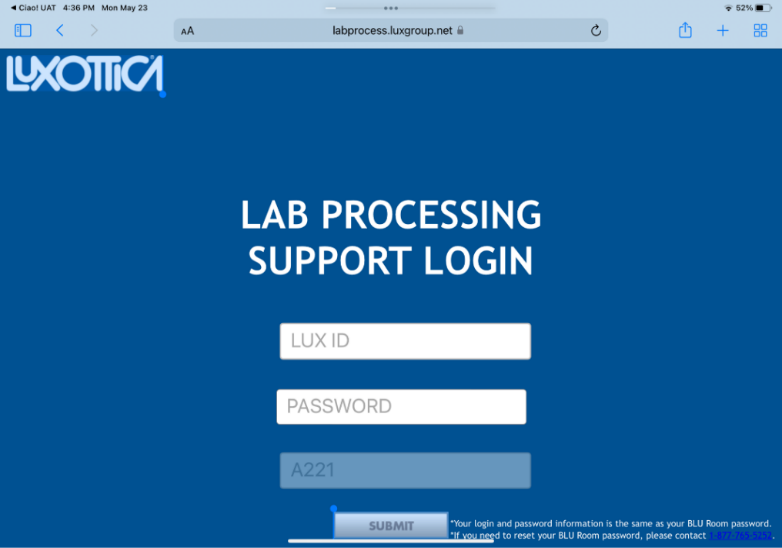
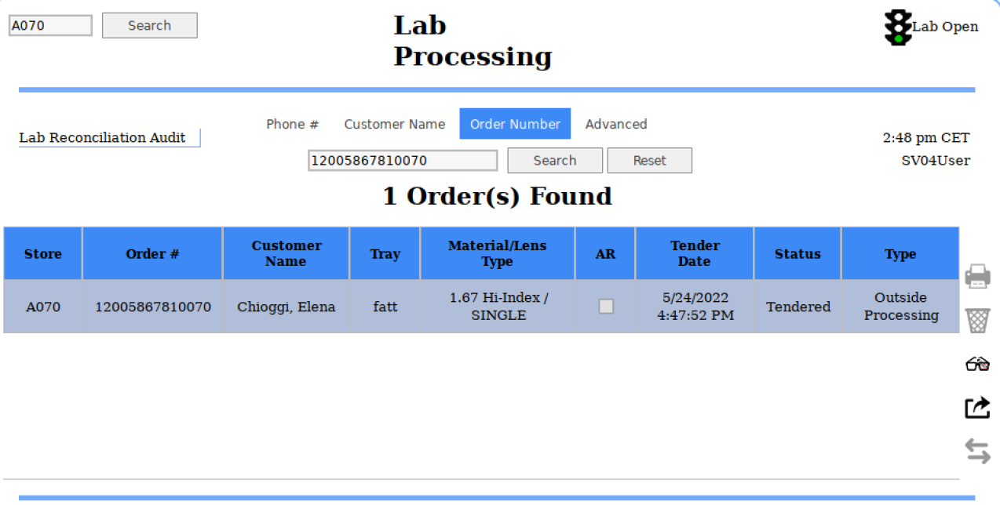
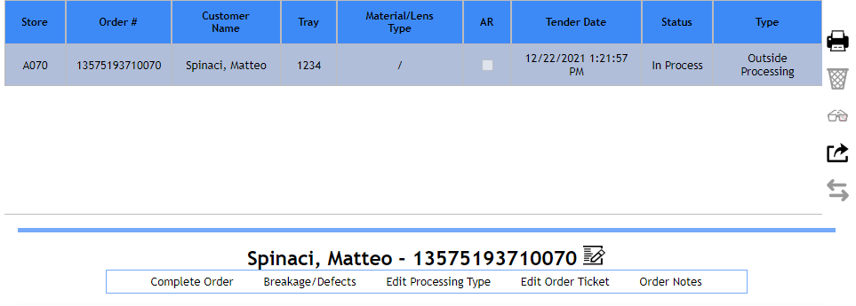
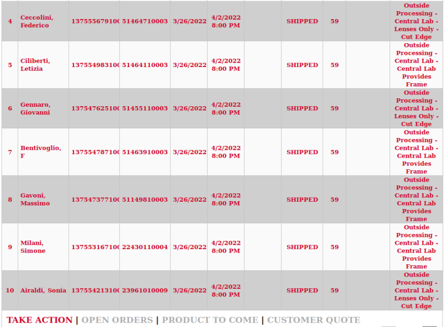

Sistema di cassa e applicativi correlati
Ciao! Optical
Ciao! Optical è il nuovo sistema di cassa per i negozi del Retail Italia in sostituzione del gestionale Acuitas. Tale sistema presenta alcune caratteristiche peculiari.
A differenza di Acuitas è utilizzabile sia su computer (con sistema operativo Linux) che su IPad in versione applicazione.
Ciao! Optical è strutturato in due sezioni principali distinguibili anche attraverso una differente interfaccia utente:
- Customer Order, la sezione del gestionale utilizzabile per la presa ordine, l'inserimento delle anagrafiche clienti e le prescrizioni oculistiche.

Accedendo a Customer Order si visualizzano tre pagine:
-
Ricerca Cliente, la prima pagina proposta dal sistema utilizzabile per ricercare un cliente esistente o per procedere alla creazione di una nuova anagrafica
-
Vendita Rapida, da dove è possibile effettuare una vendita veloce senza registrare l'anagrafica del cliente
-
Elenco Ordini, pagina che contiene tre differenti liste di raccolta degli ordini attivi registrati sul negozio:
-
Attivo: elenco di tutti gli ordini creati dal negozio per i quali non è stata presa una caparra e che non sono ancora stati consegnati al cliente. Questi ordini rimangono salvati per tre giorni in questa lista. Questa lista è utile per salvare ordini creati ma non ancora confermati dal cliente e che potrebbero evolversi entro i prossimi tre giorni in ordini per cui dover prendere una caparra o procedere direttamente alla vendita.
-
Archivio: elenco di tutti gli ordini che passati i 3 giorni si spostano dall' elenco attivo e rimangono in questa lista per i successivi 27 giorni.
-
Caparra: elenco di tutti gli ordini per i quali è stata presa una caparra e che devono essere consegnati ai clienti.
-
Gli ordini che figurano in stato "Pronto" sono ordini per cui si è arrivati allo step di completamento dell'ordine e sono pronti per essere pagati o per ricevere caparra. Gli ordini "In corso" sono ordini per cui il flusso di vendita è stato interrotto e che sono stati salvati nella lista attivo.
- XStore, la sezione del gestionale dedicata ai pagamenti delle transazioni e alla gestione della cassa.

Attraverso questa sezione sono gestiti i processi di apertura e chiusura delle postazioni di cassa e del negozio, la stampa e ristampa di scontrini e fatture e la conclusione delle vendite attraverso tutti i metodi di pagamento attivi.
Le credenziali d'accesso per il sistema corrispondono alle credenziali personali attualmente utilizzate per MIM
Tool kit
Il Tool Kit è uno strumento che raccoglie i link necessari per accedere a tutte le piattaforme e gli applicativi utili per le diverse attività svolte in negozio.
Per accedere ad uno di essi è necessario cliccare sull'icona di riferimento. Per visionare tutte le icone disponibili è possibile passare alla seconda e alla terza pagina del Tool Kit cliccando sul secondo/terzo pallino nero come mostrato nelle immagini sottostanti.


Questo strumento raccoglie tutte le icone attualmente presenti sul desktop dei computer e le pagine salvate come preferiti all'interno della pagina iniziale del browser Internet.
Oltre gli applicativi già di conoscenza del negozio, ne sono stati aggiunti due nuovi:
-
Look Up Tool, strumento dedicato alla consultazione dello storico vendite di tre anni presente su Acuitas. Su Ciao Optical! infatti sono state importate tutte le anagrafiche cliente e i dati delle prescrizioni. Le vendite invece sono disponibili su questo strumento.
-
Listini&Sconti, archivio di tutti i listini (offerta commerciale occhiale completo, assicurazioni e abbonamenti) disponibili in formato PDF e consultabili direttamente da web senza doverli scaricare in locale sul computer.
LPA
La piattaforma LPA -- Lab Processing Application è dedicata alla parte finale del processo di inserimento ordini verso il laboratorio di Sedico. È possibile accedere alla piattaforma attraverso il Tool Kit, selezionando Lab Processing Application.

Attraverso di essa è possibile gestire diversi processi: trasmettere gli ordini a Sedico, modificare la tipologia di job type (complete pair, lens only, frame to come), inserire tracciature per le lavorazioni lens only, effettuare il processo di ispezione al ricevimento dei work order e gestire i remake post-vendita.
Le credenziali d'accesso per il sistema corrispondono alle credenziali personali attualmente utilizzate per Ciao.
Una volta effettuato l'accesso a LPA, la schermata propone un elenco in ordine cronologico di tutti gli ordini attualmente in gestione sul negozio, ossia tutti gli ordini inseriti a livello di Customer Order ma, non ancora trasmessi a Sedico.
Per procedere alla trasmissione, selezionare l'ordine di interesse nella schermata principale se immediatamente visibile o, in alternativa, ricercarlo attraverso il campo Order Number.
Il numero di ordine che si vede su LPA è lo stesso di quello visualizzato su Order Tracker e che visualizza il Lab
 Una volta selezionato l'ordine, cliccare
sull'icona in corrispondenza della barra delle azioni sulla destra. Lo
status dell'ordine passerà da Tendered a Trasmitted.
Una volta selezionato l'ordine, cliccare
sull'icona in corrispondenza della barra delle azioni sulla destra. Lo
status dell'ordine passerà da Tendered a Trasmitted.

Da questo momento in poi monitorare l'ordine attraverso Order Tracker.
Alcuni possibili status in cui un ordine si può trovare su LPA sono i seguenti:
Pending Cancel, Ready, Received, Remote Order Complete, Shipped, Staged, Surfacing. Ma i principali sono:
-
Tendered, quando l'ordine è stato completato su Customer Order
-
Trasmitted, quando l'ordine è stato trasmesso al laboratorio di Sedico
Inoltre, su LPA è possibile anche eseguire le azioni riportate di seguito cliccando sulle seguenti icone:
È inoltre possibile, sempre dalla stessa schermata, effettuare diverse azioni:
A. Complete Order: Per completare l'ordine, procedendo con l'ispezione.
B. Breakage/Defects: Segnalare rotture o difetti ed eventualmente sostituire UPC.
C. Edit processing type: per modificare il tipo di lavorazione. Cliccando su Change Lab posso vedere il tipo di ordine, inoltre cliccando Edit Lab (Outside Porcessing per Sedico) e in Job Type è possibile cambiare la tipologia di ordine (da Frame to Come a Lens Only, per esempio). In questa sezione è possibile, inoltre, eseguire anche la tracciatura.
D. Edit Order Ticket: in Change OPC per modificare le misure della montatura; modificare lo spessore delle lenti e le misurazioni del cliente specifico.

Order tracker
La piattaforma Order Tracker rimane lo strumento dedicato al controllo e monitoraggio della lavorazione degli ordini e del loro flusso di consegna. È possibile accedere alla piattaforma attraverso il Tool Kit, selezionando Order Tracker.

Tra le novità che derivano dall'adozione di Ciao! Optical come nuovo sistema di cassa ci sono alcune migliorie che riguardo Order Tracker:
- Quando un WO viene consegnato al cliente e scontrinato in cassa, il record dell'ordine ad esso riferito viene in automatico identificato come consegnato e si cancella dalla lista degli ordini ancora in gestione presente in Order Tracker.
Di conseguenza non si rende più necessario effettuare la procedura manuale per indicare che è un ordine è stato consegnato (DISPENSED) perché questo processo è automatico.
-
Nella sezione PRODUCT TO COME è possibile monitorare anche gli ordini di lenti a contatto indirizzati al negozio.
-
Tutti gli ordini effettuati con Smart Shopper sono monitorabili in Order Tracker. In particolare:
-
Ordini di sola montatura (occhiale da sole o montatura da vista) à l'ordine è visibile nella sezione PRODUCT TO COME di Order Tracker. È possibile controllare l'ordine fino al momento in cui viene dato in gestione al corriere.
-
Ordini di occhiali completi la cui montatura è stata selezionata da Smart Shopper (nuova funzionalità disponibile grazie a Ciao! Optical) à l'ordine è visibile nella sezione OPEN ORDERS come avviene attualmente per tutti i work order.
-